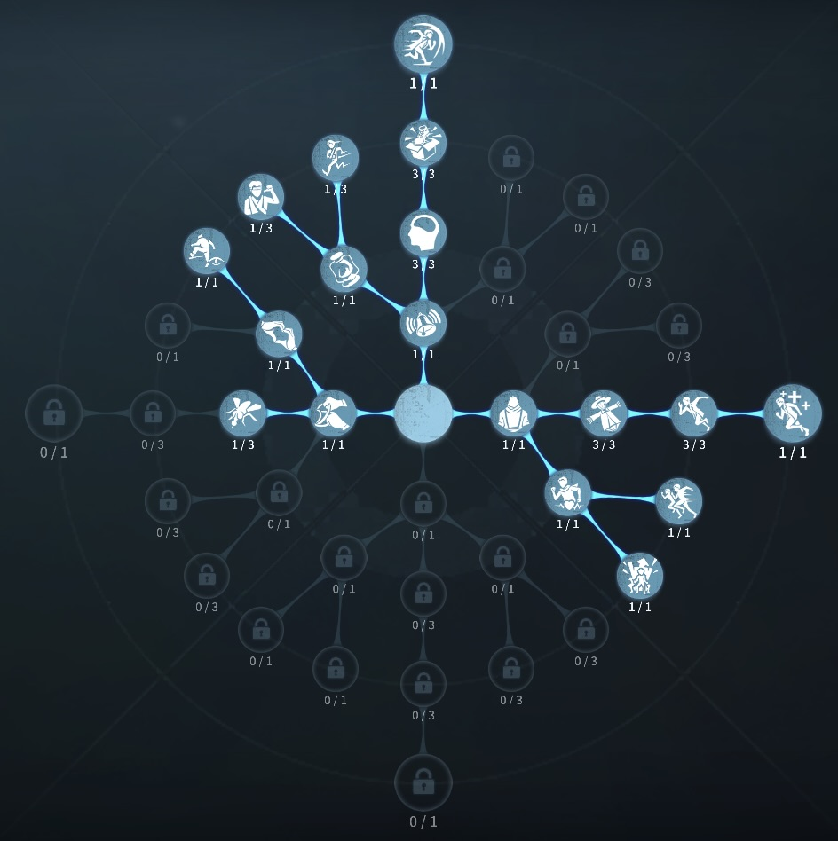
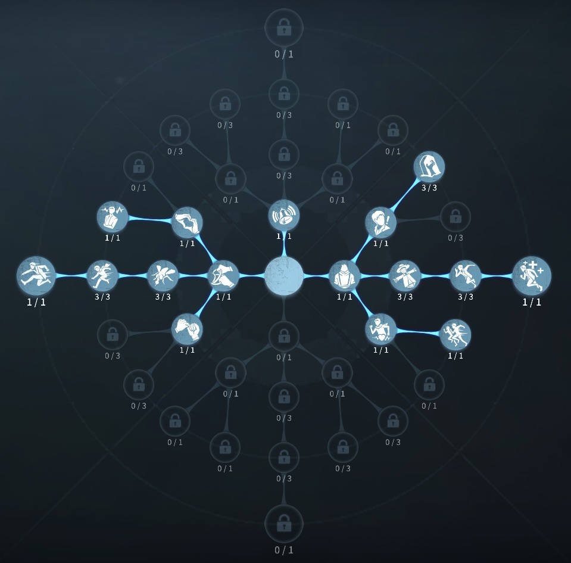

少女の評価
2人のサバイバーが1人に！
外在特質と特徴
特質1:記憶の欠片
・少女は過去を記憶するかけらを持っており、使用することでかけらが落ちた6.1mの範囲内のすべてのキャラは衝撃が拡散する方向に一定距離押しやられる。特質2:記憶同期
・付近の仲間と記憶を同期させることができる。同期したサバイバーは解読速度70％、板窓乗り越え速度15％、板倒しと救助速度30％上昇。・少女は同期状態でも記憶の欠片を使用できる。
・同期中は同期されているサバイバーが計1ダメージを食らうと解除される。同期中は少女に攻撃は当たらず、自分で解除することができる。同期を解除すると2秒間移動速度30％上昇。
・救助後20秒間とイノシシに騎乗した野人にはとりつけない。
特質3:哀れみ
・サバイバーの一人のもとにワープすることができる。ワープ中ハンターに少女の位置がばれる。ワープは途中でキャンセルすることができるが5秒間ハンターに位置がばれる。 危機一髪中とハンターの心音範囲内にいるときはワープすることができない。特徴
案外簡単に見えて、使いこなすのがとても難しいサバイバーサバイバーの中で理解度と練度が必要
救助後サバイバーにとりつくことでダブルチェイスの形がとれる。
強化版単体チェイスなどでチェイスを延ばすことができる。
基本的な立ち回り方
1. 追われた時
初手にワープでサバイバーの位置を確認し
心音がなる前にワープしよう。
使えない場合は、欠片を使いつつチェイスをのばそう！
2. 追われない時
解読に専念しよう！
救助後、救助職にワープし治療しよう！
無理にワープをしたり、同期することはやめて、解読に専念しよう！
状況を見て、ダブルチェイスは強い。
おすすめの内在人格
フライホイール型人格
この内在人格は、観客効果で解読速度を高め、感覚順応で板窓を監視、防衛反応で板窓を強化された人格

膝蓋腱反射型人格
この内在人格は、鵜化効果で解読を早めて、うたた寝で椅子耐久を伸ばした人格


みんなのコメント